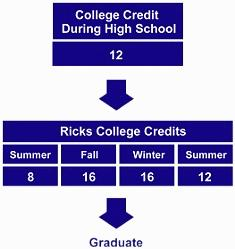

Admissions & Scholarships |
|
Admissions & Scholarships |
|
| a | a | a | a |
| ADMISSIONS Apply On-Line Status Requirements Deadlines Deferment Survey Student Profile Request Info CAMPUS VISITS Campus Map Virtual Tour Today's Weather Regional Map On-Campus Tour FAST TRACK About Fast Track Requirements Majors Advisors SCHOLARSHIPS Award of Excellence Department Talent Continuing Summer |
ABOUT
FAST TRACK Earn college credit while in
high school. This can be done by:  Many college credits earned while in
high school will fill both college and high school requirements. Students
participating in Fast Track should work with both a Ricks advisor and high school
counselor in planning their program. |